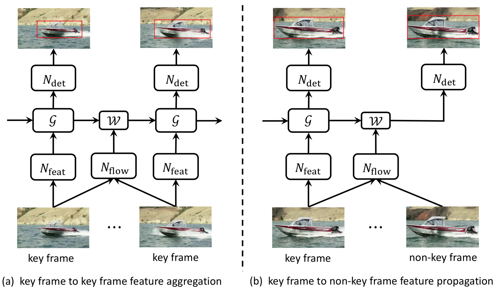
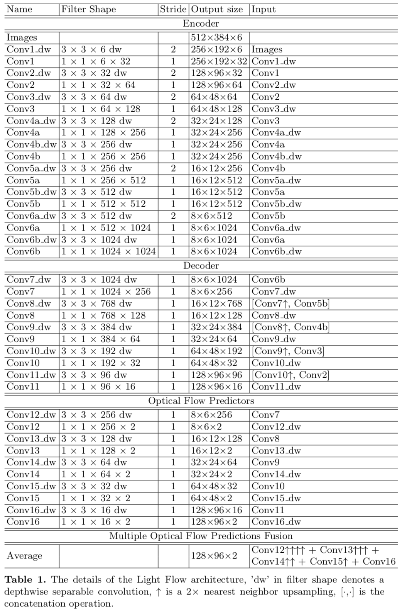

painterdrown Blog - painterdrown CV
⏰ 2018-06-03 13:10:07
👨🏻💻 painterdrown
尽管已经在视频目标检测取得了不错的效果（参考上面 👆 的学习笔记），但是目前的架构对于手机来说还是太重了，也不清楚将 sparse feature propagation 以及 multi-frame feature aggregation 应用在计算资源比较有限的手机里，效果会受多大的影响。——因此，这篇论文提出了一个轻量级（聚焦于 sparse key frames）的视频目标检测框架。
要把目前最好的这套视频目标检测框架移植到手机设备上，还是存在着一些问题。比如说，特征传播和特征聚集共同的 flow estimation 离要在手机上做到实时，还有比较大的一段差距。做聚集的时候，由于手机内存的限制，也不能取太大的帧区间。
要在手机上做视频目标检测，还是要秉持两大原则：
当时这两者的结构都需要针对手机进行重新设计：
关于 Sparse Feature Propagation 和 Multi-frame Feature Aggregation 我就不再赘述了。
这两个准则在桌面 GPU 下的表现很好。手机上的准则要做一些调整：

FlowNet 是 pixel-level 的光流估算网络。FlowNet 先通过卷积对输入图像进行编码得到特征图（大小变为原来的 1/64），解码的时候，特征图经过几个反卷积层，得到高分辨率的流精度信息。在每个反卷积层的后面，结果特征图都会与解码器的最后一个特征图联系起来，两者共享空间分辨率以及一个未被采样的较为粗糙的流精度。解码器中的特征图会各自经过 optical flow predictors，然后根据损失函数选取精度最好的 predictor 用于 inference。
基于 FlowNet，Light Flow 做了几处修改，稍微损失了精度，但是理论上能提速 65 倍。
此外，与 FlowNet 不同的是，作者做的是 multi-resolution prediction。对 multi-resolution 进行向上采样，达到一个与最佳预测相同的空间分辨率，之后取均值作为最终的 prediction。训练的时候，也只有一个作用在 averaged optical flow prediction 上面的损失函数，这样能减少端点 10% 的错误率。

Light Flow 的架构如上表所示，每一个卷积操作后面都跟有一个 batch normalization 以及 Leaky ReLU nonlinearity。Light Flow 是在 Flying Chairs dataset 上预训练的。
此外还有两个方法能加速 Light Flow：
Recursive aggregation 能够更好地结合邻近帧的信息，但是很难被训练来做长区间的特征聚集。研究表明：GRU 相比于 LSTM, RNN 更适合将长期的依赖关系进行模型化 (modeling long-term dependencies)。因此，作者将 convolutional GRU 收纳入 FGFA 中，聚集操作更改为：
相比原生的 GRU，有下面三点区别：
Nfeat, Ndet 和 Nflow 都可以连接在一起，进行端到端的训练 (for video object detection task)。